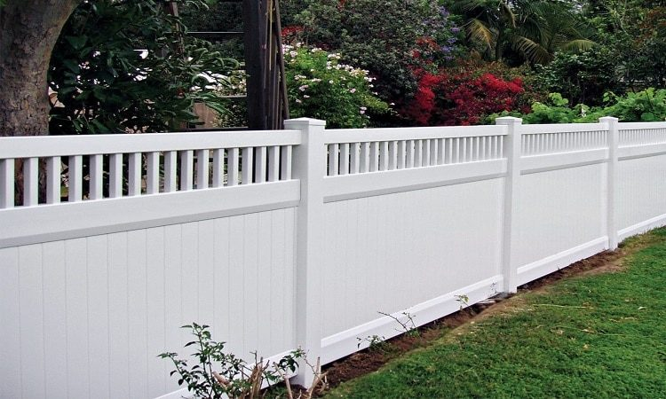

In This Guide
- Vinyl does not need painting or staining, does not rot, and cleans with soap and water, which is a real advantage in humid Louisiana.
- The trade-offs are a higher upfront price, repairs that usually mean swapping a panel, and a fixed set of colors and styles.
- Heat, hard impacts, mildew in shaded spots, and wind on tall solid panels are the main things to plan around here.
- Vinyl makes the most sense for homeowners who value low upkeep and plan to stay put for a while.
Vinyl fencing has earned its reputation as the low-effort choice, and for many yards it lives up to it. It also has limits that sales pitches tend to skip. Here are the advantages and disadvantages side by side, with a note on how vinyl handles New Orleans weather.
The team at Big Easy Fence installs several fence materials, so this comparison aims to help you decide, not to sell you on one. You can see the full lineup on our fence types page, and vinyl often makes the shortlist for residential fencing projects.
The Advantages of Vinyl Fencing
Most of what people like about vinyl comes down to what it does not ask of you.
Low Upkeep
Vinyl never needs painting, staining, or sealing. A rinse with a hose, or a wash with soap and water, handles most dirt. Over the life of the fence, that saves a good deal of time and money compared with materials that need regular coatings.
No Rot and No Termite Meal
Moisture rots wood, and termites eat it. Vinyl does neither, which matters in a wet, warm place like south Louisiana. A vinyl fence will not swell, split, or splinter from humidity the way an untreated wood board can.
A Wide Range of Styles and Colors
Vinyl is made in privacy panels, picket styles, lattice tops, and decorative designs, in white and several other colors. The color runs through the material, so scratches are less noticeable than on a painted surface.

Long-Term Value
A vinyl fence usually costs more to install than some alternatives, but you spend little on upkeep afterward. Over a long ownership period, the lower maintenance bill can close some of that gap. It depends on how long you keep the fence and what you compare it to.
The Disadvantages of Vinyl Fencing
Vinyl is not the right answer for every yard, and these are the reasons why.
Higher Upfront Cost
Vinyl often costs more to buy and install than chain link and some wood options. If your budget is tight or you plan to move soon, that up-front difference matters more than the savings on upkeep.
Repairs Mean Replacement
When wood gets damaged, a carpenter can often patch it. A cracked vinyl panel or rail usually gets replaced whole, and matching an older color can take some effort. If you need help with a damaged section, our fence repair team can look at it.
Less Room to Customize
Wood can be cut on site, stained, painted, and painted again in a new color. Vinyl comes in the shapes and shades the manufacturer makes, and it generally cannot be repainted. The choice you make on day one is the one you keep.
Heat, Impact, and Mildew
Vinyl expands and contracts with temperature, so installers allow for that movement. A hard hit from a mower, a ball, or a fallen limb can crack it. Shaded, damp spots can grow mildew or algae, though a scrub with soap and water usually clears it. Some white and light products can also chalk or yellow over time in strong sun.

How Vinyl Handles New Orleans Weather
Weather is where a material earns its keep here, so it deserves its own look.
Humidity and Rain
This is vinyl's best category. Constant moisture that rots wood and rusts unprotected steel does not bother vinyl. The only real humidity issue is surface mildew in shady corners, which is a cleaning chore and not a structural problem.
Sun and Heat
Long, hot summers mean lots of UV exposure. Good products are made to resist it, but ask about UV protection and the manufacturer's coverage before you buy. Dark colors can absorb more heat, which matters for how much the panels move.
Hurricane-Season Winds
A tall, solid privacy fence acts like a sail in strong wind. Post depth, post material, and installation quality all matter more for that style than for an open picket design. If wind is your main worry, an open or shadowbox design lets air pass through, which reduces the load.
How Vinyl Compares on Cost and Upkeep
The table below is a general guide. Actual prices and effort depend on the product, the height, and the site.
| Material | Upfront Cost | Upkeep | Privacy |
|---|---|---|---|
| Vinyl | Often higher | Low: wash as needed | Excellent with solid panels |
| Wood | Varies by wood and style | Regular sealing or staining | Excellent with solid boards |
| Chain Link | Typically the lowest | Low | Minimal without slats |
If you are weighing vinyl against natural material, read up on a wood fence too, and consider chain link if budget leads the decision.

Is Vinyl the Right Fit for You?
Vinyl tends to suit homeowners who want a clean, steady look and would rather not spend weekends painting or sealing. It is a weaker fit if you need the lowest possible price, want to change the color later, or expect rough treatment from equipment and kids at play.
If you are not sure which side of that line you fall on, a free estimate lets you compare real options for your yard before you decide.
Wondering If Vinyl Fits Your Yard?
Tell us what you want from the fence and how long you plan to keep it. We will help you weigh vinyl against the alternatives.